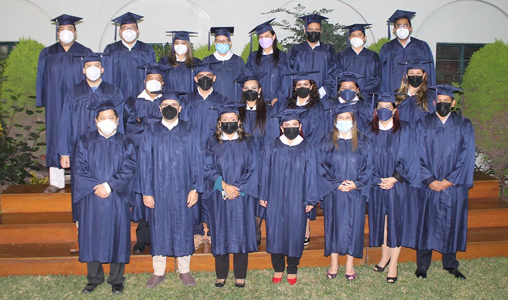
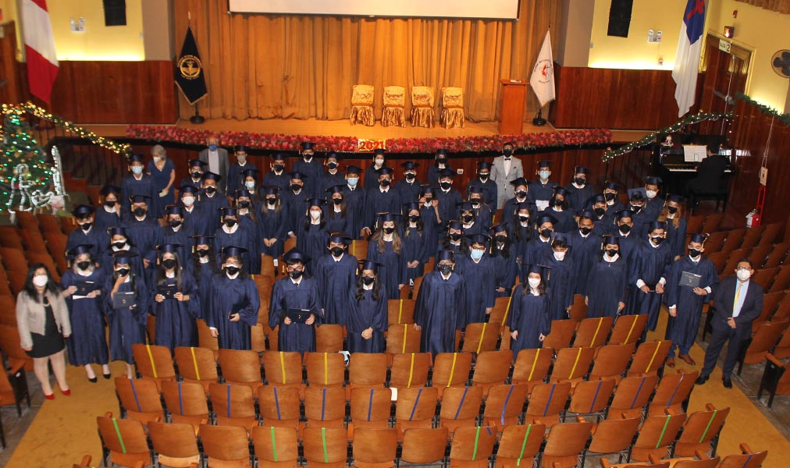
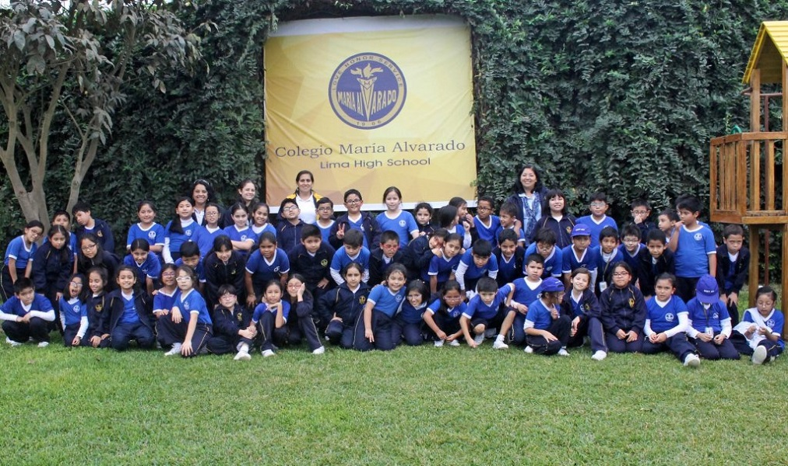
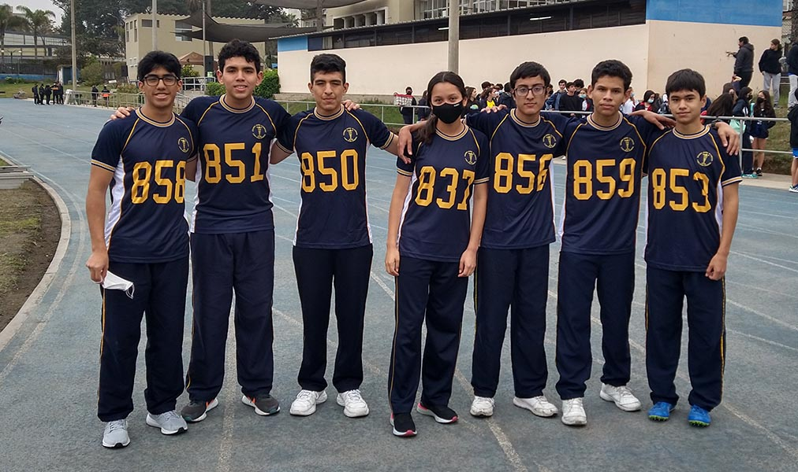
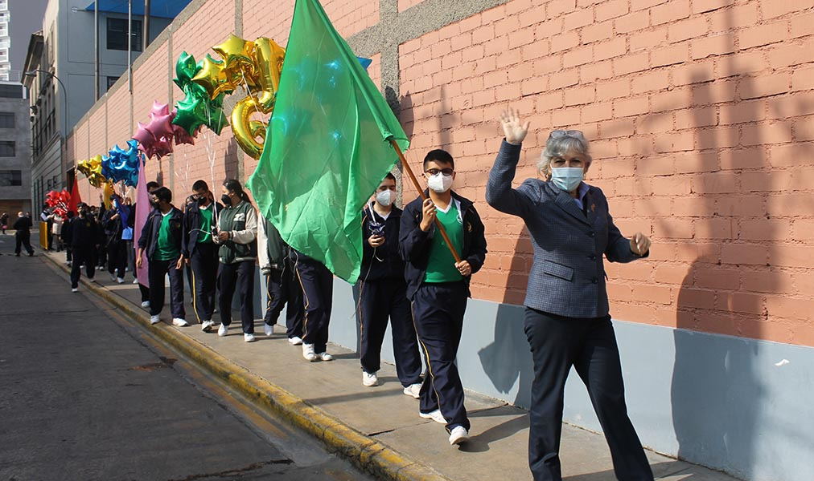

Galeria fotográfica
Liceo Monseñor Odio
Este grupo fue muy interesante por una situación de accesibilidad, un estudiante perdió ambas pierna en un accidente automovilístico. Sus compañeros se reportaron muy solidarios el día de la sesión fotográfica
Universidad sagrado corazon

La universidad Sagrado Corazón consta de gran prestigio internacional, esta sesión de fotos fue una sesión de lujo, en la cual todo los estudiantes tenían que presentarse vestidos de gala.
Liceo San Mateo de Lucas

Liceo San Mateo de Lucas consta con un anfiteatro estilo greco romano dela época media, para llevar acabo esta tomas erarias ocupamos utilizar dones y varia grúas especializadas.
St Mountain High School

St Mountain High School es un colegio bilingue ubicado en la ciudad de Escazú en uno de los barrios mas influyentes del país, esta sesión se llevo a acabo con equipo de ultima tecnología y captura en formato IMAX
Escuela Maria Auxialiar

Como su nombre lo indica la Escuela Maria Auxialiar de la altura se encuentra a a mas de tres mil metros de altura sobre el nivel del mar, ubicada en una remota ciudad minera hizo de esta sesión todo un reto.
Liceo Metford INC

El Liceo Metford INC fue fundado por el fomoso futbolista costarricense Hernan Metford, esta escuela se especializa en enseñar con pedagogía especial basa en el deporte.